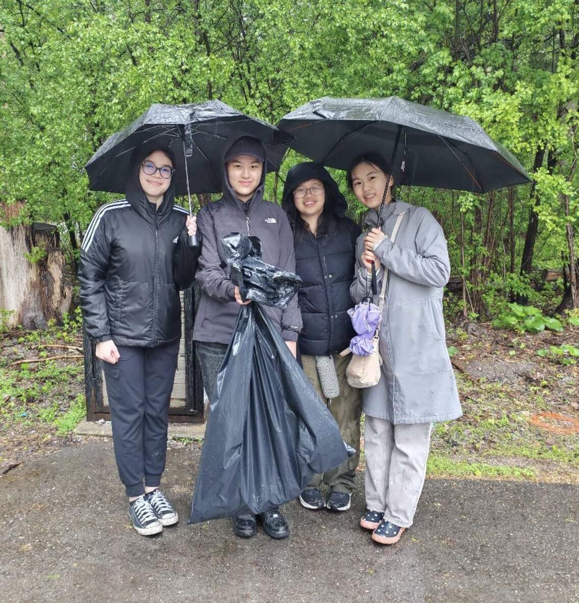
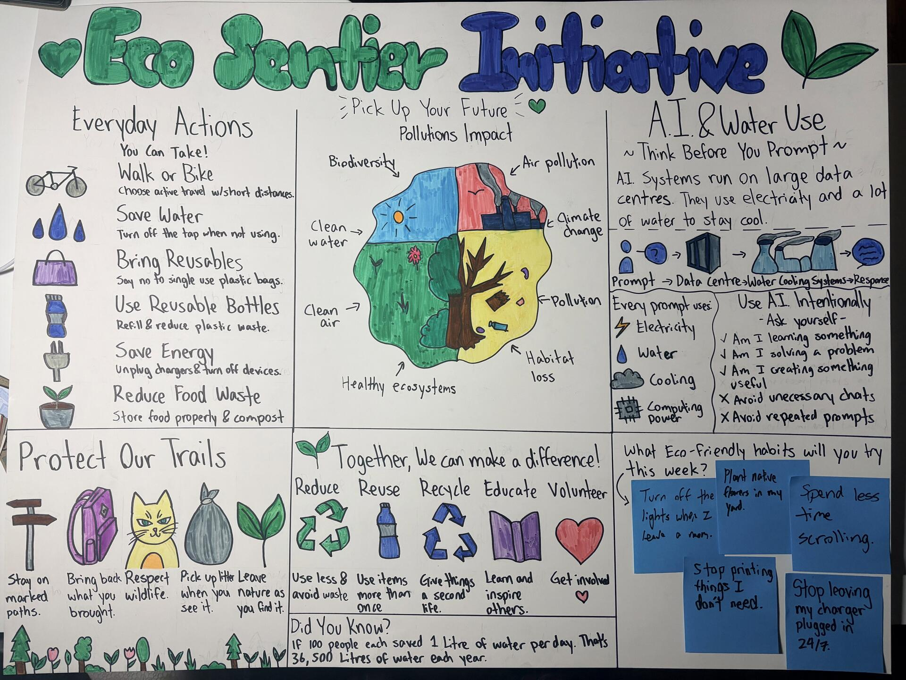
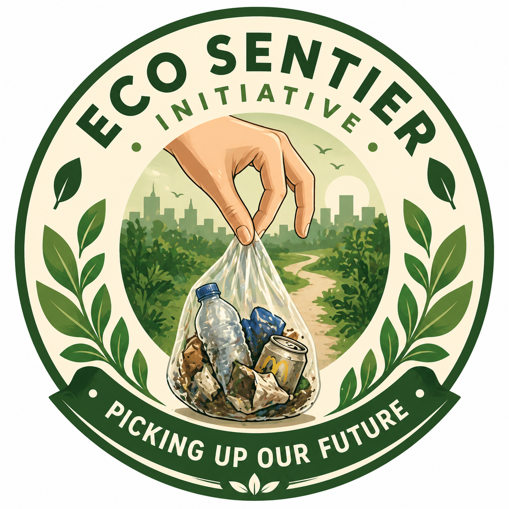

Projects.
A selection of independent work spanning financial research, investment analysis, and community initiatives.
01 / COMMUNITY INITIATIVE
Eco Sentier Initiative



↗Our Mission.
Eco Sentier is a student-led environmental initiative dedicated to encouraging local conservation through hands-on community action. We aim to make environmental involvement more accessible by bringing students and community members together to care for the natural spaces around them.
The Story.
Eco Sentier began with the idea that meaningful environmental change can start at the local level. What began as an individual initiative developed into a growing volunteer effort, bringing together students, local partners, and community support.
Through organizing cleanups, building partnerships, and developing outreach materials, I have worked to turn that initial idea into an ongoing community initiative.
The Impact.
Since its founding, Eco Sentier has involved more than 15 student volunteers in local conservation efforts. Through organized cleanups and community engagement, the initiative has helped bring greater attention to the importance of caring for shared outdoor spaces.
Beyond the immediate results of each cleanup, Eco Sentier continues to build connections between students, businesses, and the wider community.
02 / FINANCIAL RESEARCH
Magna International Stock Pitch
Investment Presentation.
The Motivation.
I participated in the Target Alpha Stock Pitch Competition to explore my interest in finance beyond the classroom and gain a more practical understanding of investment research. I wanted to challenge myself to evaluate a real company, develop an independent investment perspective, and communicate my findings through a structured stock pitch.
The Competition
I selected Magna International and examined its financial position, valuation, competitive landscape, and long-term growth prospects. My research incorporated discounted cash flow modelling and comparable-company analysis, alongside an examination of the automotive industry's transition toward electric vehicles.
I independently developed and presented my investment thesis, responding to questions about the company's outlook and valuation.
The Result.
My independent Magna International stock pitch earned second place nationally among 88 teams. The experience strengthened my ability to conduct financial research, develop an investment thesis, and communicate my analysis while responding to questions about the company's outlook and valuation.